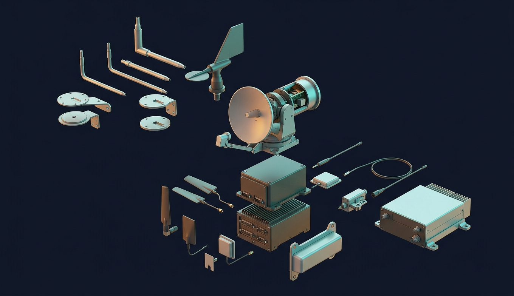

Снаружи на носу: 3 трубки Пито (скорость), 6 статических портов (высота), 3 флюгера угла атаки, датчики температуры. Внутри: 3 инерциальных блока, GPS, радиовысотомеры. Всё — по три, голосование 2 из 3.
| Прибор / датчик | Что даёт | Как работает / что бывает |
|---|
| PFD (основной пилотажный) | авиагоризонт, скорость (лента слева), высота (лента справа), вертикальная скорость, курс, режимы автопилота — всё в одном экране перед каждым пилотом | заменил «шесть часов» 1970-х |
| ND (навигационный) | карта: маршрут, точки, погодный радар, рельеф, другие самолёты (TCAS), аэропорты | масштаб 10–640 миль |
| ECAM / EICAS | двигатели (N1, EGT, расход), системы, предупреждения с процедурами — Airbus показывает, что делать, по шагам | Qantas 32 — 650 сообщений за минуту |
| ПВД (трубка Пито) | скоростной напор → приборная скорость; с обогревом | лёд/осы/заклеили скотчем (Aeroperú 603) → ложная скорость; AF 447 — кристаллы льда на 3 ПВД сразу |
| Статические порты | атмосферное давление → барометрическая высота; QNH выставляется по данным аэропорта, выше 3000 м — все на 1013 | высота «по давлению» одинаково врёт у всех — эшелоны безопасны |
| Датчик угла атаки | флюгер на борту фюзеляжа | MCAS читал один; Airbus — три, отбрасывает выпавший |
| ИНС / ADIRU | лазерные гироскопы + акселерометры: знает положение, ускорения, вычисляет позицию без внешних сигналов; дрейф 1–2 км/ч | выравнивание 5–10 мин на стоянке; корректируется GPS и радиомаяками |
| GPS / GNSS | позиция 10 м; основа RNAV/RNP-заходов | спуфинг у зон конфликтов (Балтика, Ближний Восток, 2023–25) — ИНС и маяки как резерв |
| Радиовысотомер | высота над землёй до 750 м по отражённому радиосигналу — для посадки и автоматических отсчётов «fifty, forty, thirty…» | 5G-конфликт частот в США 2022 |
| Погодный радар | в носу, видит осадки на 300 км, сдвиг ветра, турбулентность (доплер) | не видит «ясное небо» турбулентность — только по отчётам |
| TCAS | опрашивает транспондеры соседей, при угрозе даёт команду «climb/descend», согласованную с другим самолётом | Юберлинген 2002: диспетчер сказал одно, TCAS другое, экипаж послушал диспетчера. Теперь TCAS — приоритет |
| EGPWS | база рельефа + позиция → «TERRAIN, PULL UP» за 60 с до столкновения | CFIT (столкновение с землёй в управляемом полёте) — было убийцей № 1, теперь почти ноль |